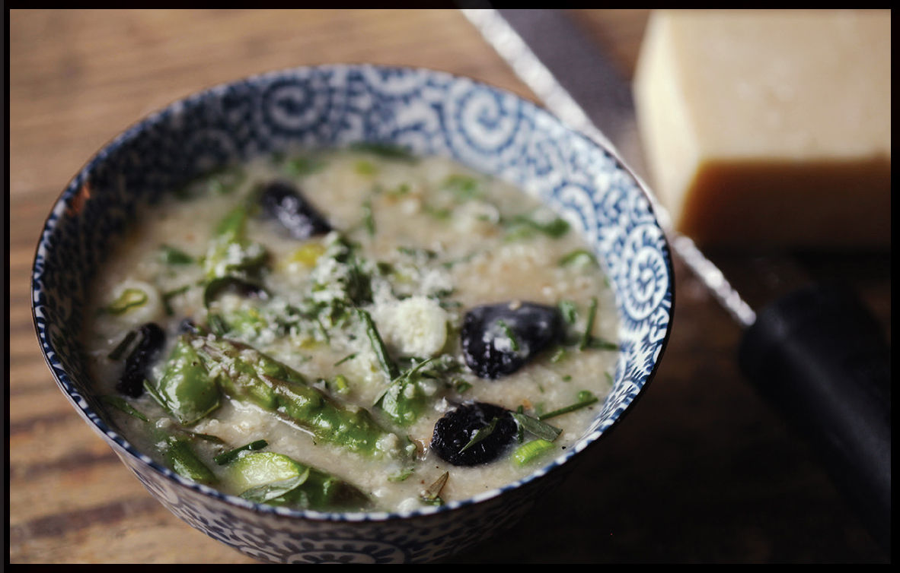

MUSHROOM AND SPRING VEGETABLE CONGEE
Yield Serves 3 to 4 Active Time 30 minutes Total Time 1½ hours |
This risotto-inspired congee works with any combination of spring vegetables, so long as they are prepared according to the chart on here. |
INGREDIENTS
Water or low-sodium chicken or vegetable stock (6 cups for short-grain rice, 5 cups for jasmine)
1 ounce (30 g) dried porcini or shiitake mushrooms
½ cup (about 3.5 ounces/100 g) short-grain or jasmine rice
¼ cup (60 ml) extra virgin olive oil
¼ cup (50 g) unsalted butter
1½ pounds (700 g) mixed fresh mushrooms, such as shiitake, cremini, oyster, and chanterelle, trimmed and thinly sliced
Kosher salt and freshly ground black pepper
3 scallions, finely chopped
2 medium garlic cloves, minced (about 2 teaspoons/5 g)
2 teaspoons (10 ml) light soy sauce or shoyu
1 tablespoon (15 ml) light miso paste
½ cup (175 ml) dry white wine or Shaoxing wine
12 ounces (325 g) spring vegetables of your choice (see Note), prepped for congee
1 ounce (30 g) finely grated Parmigiano-Reggiano cheese, plus more for serving
Small handful of minced fresh parsley leaves
Small handful of minced fresh tarragon leaves
DIRECTIONS
1 Place the water or stock and dried mushrooms in a microwave-safe container and microwave on high power until simmering, about 5 minutes. Remove from the microwave. Using a slotted spoon, transfer the rehydrated mushrooms to a cutting board and cut into bite-sized pieces. Add the rice to the stock and set aside.
2 Heat the oil and butter in a wok over medium-high heat, swirling, until the foaming subsides. Add the fresh mushrooms, season with salt and pepper, and cook, stirring occasionally, until excess moisture has evaporated and the mushrooms are well browned, about 8 minutes.
3 Add the scallions, garlic, and chopped rehydrated mushrooms and cook, stirring frequently, until softened and aromatic, about 4 minutes. Stir in the soy sauce and miso paste until evenly incorporated.
4 Add the wine and cook, stirring, until the raw alcohol smell has cooked off and the wine has almost fully evaporated, about 2 minutes.
5 Add the stock and rice. Add a large pinch of salt, increase the heat to high, and bring to a simmer. Stir the rice once, making sure no stray grains are clinging to the side of the pan above the liquid. Cover the wok and reduce the heat to a bare simmer. Cook, stirring occasionally, until the rice is tender and the congee has thickened to a creamy porridge, about 1 hour.
6 Increase heat to high and add the prepared spring vegetables, simmering according to the timing on the chart. Remove from the heat, add the cheese, and stir rapidly to incorporate thoroughly. Season with salt and stir in the herbs. Serve.
